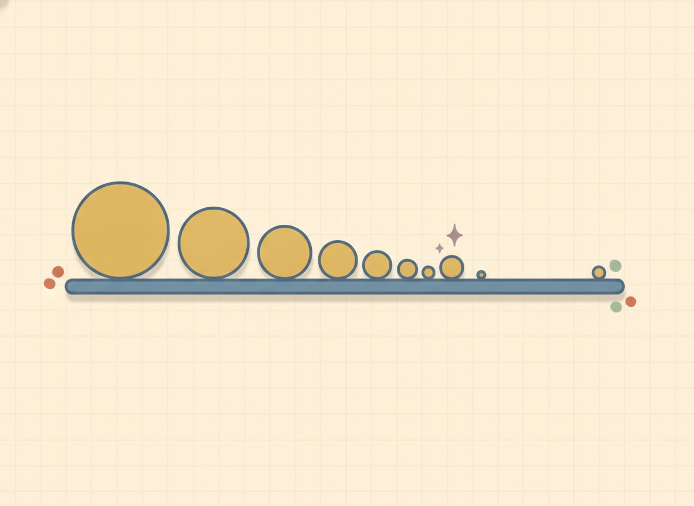

Scientific notation
Some numbers are too long to read comfortably: the distance to a star, the width of an atom. Scientific notation is a tidy way to write them, with one digit, a decimal tail, and a power of ten that records how big the number really is.
You already did the hard part last lesson. Multiplying and dividing these numbers is just the exponent rules from 10.1, applied to powers of ten.
Start with what a power of ten actually does. Multiplying by 10 slides the decimal point one place to the right; dividing by 10 slides it one place left. So 10ⁿ is really a record of how many places the point moved. Take 5300. Picture the decimal point starting after the 5, at 5.3, and ask how far it has to travel to rebuild the full number: three places right gets you back to 5300. So 5300 = 5.3 × 10³. The exponent 3 is just the count of slides.

Small numbers work the same way, and this is where the negative exponents from last lesson come back. Take 0.00042. To get up to a single nonzero digit, 4.2, you slide the point four places to the right. But sliding right makes a number bigger, so to keep the value the same you must have started by dividing, and that's a negative exponent: 0.00042 = 4.2 × 10⁻⁴.
The negative power of ten is the same reciprocal idea as x⁻ᵃ = 1/(xᵃ): it's a division written as an exponent.
Once a number is in this form, multiplying and dividing splits into two easy jobs. Handle the front numbers (the coefficients) on their own, and handle the powers of ten with the rules you already know: multiplying tens adds the exponents, dividing tens subtracts them. Then, if the front number lands outside its allowed range, slide it back and adjust the power of ten to match.
New words
- 10.2.d1 Scientific notation: a number written as a×10ⁿ, where a (the coefficient) satisfies 1≤|a|<10 and n is an integer. (Plain English: exactly one nonzero digit before the decimal point. The absolute-value bars let the coefficient be negative for a negative number, e.g. -5300 = -5.3×10³, where |-5.3|=5.3 is in range. Every example in this lesson is positive, so 1≤a<10 is the working form here, but state the rule with |a| so it stays true for negatives.)
- 10.2.d2 Standard form (here): the ordinary way to write the number, e.g. 5300.
Worked example
Large number → scientific notation: 10.2.w1 $$5300 = 5.3\times 10^3 \qquad(\text{check: } 5.3\times 1000 = 5300)$$
Small number → scientific notation (negative exponent): 10.2.w2 $$0.00042 = 4.2\times 10^{-4} \qquad(\text{check: } 4.2\div 10^{4}=0.00042)$$
Multiply, multiply the a's and add the exponents: 10.2.w3 $$(3\times 10^4)(2\times 10^3) = (3\cdot 2)\times 10^{4+3} = 6\times 10^7$$
Divide, divide the a's and subtract the exponents: 10.2.w4 $$\frac{8\times 10^5}{2\times 10^2} = \frac{8}{2}\times 10^{5-2} = 4\times 10^3$$
Mixed signs in the exponent (callback to 10.1): 10.2.w5 $$(4\times 10^6)(2\times 10^{-2}) = 8\times 10^{6+(-2)} = 8\times 10^4$$
Renormalize UP, the coefficient product reaches 10 or more: 10.2.w6 $$(6\times 10^4)(5\times 10^3) = (6\cdot 5)\times 10^{4+3} = 30\times 10^7$$ Stop. 30 is not in [1,10), so 30×10⁷ is not yet scientific notation. Renormalize: write 30 as 3.0×10¹, then fold that extra power of ten into the exponent (the product rule again): $$30\times 10^7 = 3.0\times 10^1\times 10^7 = 3\times 10^8$$ The decimal slid one place left (30→3.0), so the exponent went up by 1 (7→8). Sanity check: bigger coefficient shrunk ⇒ exponent must grow to keep the value the same. (Verify: 30×10⁷ = 300,000,000 = 3×10⁸.)
Renormalize DOWN, a division coefficient drops below 1: 10.2.w7 $$\frac{2\times 10^3}{8\times 10^5} = \frac{2}{8}\times 10^{3-5} = 0.25\times 10^{-2}$$ Stop. 0.25 is below 1, so this isn't scientific notation either. Renormalize the other way: 0.25 = 2.5×10⁻¹, and folding in that 10⁻¹ drops the exponent by 1: $$0.25\times 10^{-2} = 2.5\times 10^{-1}\times 10^{-2} = 2.5\times 10^{-3}$$ The decimal slid one place right (0.25→2.5), so the exponent went down by 1 (-2→-3). Same sanity check, reversed: coefficient grew ⇒ exponent must shrink. (Verify: 0.25×10⁻² = 0.0025 = 2.5×10⁻³.)
The rule running underneath all of this is the coefficient window: a proper coefficient sits at 1 or above and below 10, exactly one nonzero digit before the decimal point. If your arithmetic lands outside that window, slide the decimal back into it and adjust the power of ten by the number of places you slid: a left slide bumps the exponent up, a right slide drops it down.
Now that you've seen it done, two slips are worth naming. The first is leaving the coefficient out of range. You might write 53 × 10² or 0.53 × 10⁴ for 5300, and both equal 5300, but neither is scientific notation, because the coefficient has to be at least 1 and under 10.
The second shows up after multiplying or dividing: it's tempting to stop at 30 × 10⁷ and call it done, since the value is right. The value is right; the form isn't. Ask yourself the window question every time. Is my coefficient at least 1 and under 10? If not, slide and adjust.
And for small numbers, the sign of the exponent is easy to get backward, so run a quick test: is the number bigger or smaller than 1? Smaller than 1 means a negative power of ten.
One clean problem to reset on before the practice. Write 720,000 in scientific notation. The decimal sits after the last zero; slide it left to land just after the 7, giving 7.2, and count the slides: five places. Sliding left means the original was bigger, so the exponent is positive: 7.2 × 10⁵. One coefficient, one count of the slides, and you're there.
Check yourself
- 10.2.c1 Is 42×10³ in proper scientific notation? If not, fix it and explain the rule. (No. 42 is out of range; slide one place left and bump the exponent: 4.2×10⁴. The coefficient must be at least 1 and under 10.)
- 10.2.c2 Without computing the full number, what's (2×10⁵)(4×10³)? Which exponent rule did you just use? (Multiply the coefficients, add the exponents: 8×10⁸, the product rule on base 10.)
- 10.2.c3 Why does a number smaller than 1 get a negative power of ten? (You divide by tens to make a number that small, and a negative exponent is exactly that division: 10⁻ⁿ = 1/10ⁿ.)
You can now move a number between standard and scientific form by counting decimal slides, multiply and divide in scientific form with the exponent rules, and catch a result that's slipped out of the coefficient window and slide it back.
These problems jump between converting, multiplying, and dividing, and that switching is what makes the skill stick past today. The answers are all at the end of the lesson, and every move here appears in a worked example above, so when one stalls you, go back and reread the matching one. The last three deliberately push the coefficient out of range so you get practice sliding it home.
Convert to standard form (write the full number):
Reveal answer to problem 1
5300Reveal answer to problem 2
67,000Reveal answer to problem 3
0.00042Reveal answer to problem 4
0.0091Convert to scientific notation:
Reveal answer to problem 5
7.2×10⁵Reveal answer to problem 6
3.05×10⁻²Multiply or divide (leave in scientific notation):
Reveal answer to problem 7
6×10⁷Reveal answer to problem 8
4×10³Reveal answer to problem 9
8×10⁴Reveal answer to problem 10
3×10³Multiply or divide, then renormalize so 1≤coefficient<10: